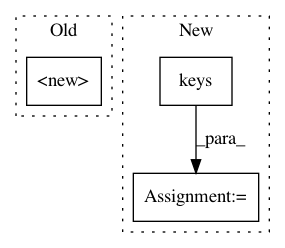

8c850dd66ec3ee14a8215c260104b0c8c1904bed,batchflow/models/tf/layers/conv_block.py,ConvBlock,ConvBlock_1,#,153
Before Change
"separable_conv_transpose": SeparableConvTranspose,
"pooling": Pooling,
"global_pooling": GlobalPooling,
"batch_norm": K.BatchNormalization,
"dropout": K.Dropout,
"alpha_dropout": K.AlphaDropout,
"dropblock": Dropblock,
After Change
)
C_GROUPS = dict(zip(LAYER_KEYS, GROUP_KEYS))
DEFAULT_LAYERS = C_LAYERS.keys()
def __init__(self, layout="",
filters=0, kernel_size=3, strides=1, dilation_rate=1, depth_multiplier=1,
activation=tf.nn.relu,
In pattern: SUPERPATTERN
Frequency: 3
Non-data size: 3
Instances
Project Name: analysiscenter/batchflow
Commit Name: 8c850dd66ec3ee14a8215c260104b0c8c1904bed
Time: 2019-08-25
Author: Tsimfer.SA@gazprom-neft.ru
File Name: batchflow/models/tf/layers/conv_block.py
Class Name: ConvBlock
Method Name: ConvBlock_1
Project Name: home-assistant/home-assistant
Commit Name: 80bc2666ac4205c3fb031e8f6f78cbdc5ec83027
Time: 2017-02-14
Author: pascal.vizeli@syshack.ch
File Name: homeassistant/components/climate/homematic.py
Class Name: HMThermostat
Method Name: _init_data_struct
Project Name: rail-berkeley/softlearning
Commit Name: 1f6686d765052c874dcf28f8036acde742decd79
Time: 2019-04-26
Author: 31363575+Alacarter@users.noreply.github.com
File Name: softlearning/environments/utils.py
Class Name:
Method Name: